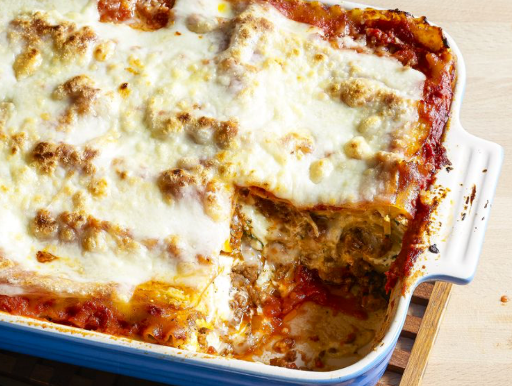

Lasagne Recipe
Back to Home

The World's best Lasagna
This lasagna recipe takes a little work, but it is so satisfying and filling that it's worth it!
When
John Chandler
submitted this lasagna recipe to Allrecipes more than 20 years ago, he had no idea how successful it would become.
One of our top-performing recipes of all time, World's Best Lasagna racks up more than 7 million views per year
and has ranked among the most popular lasagna recipes on the internet for two decades. Unfortunately, John
unexpectedly passed away at 53 years old —
read all about his life and legacy here.
Ingredients
1 pound sweet Italian sausage
- ¾ pound lean ground beef
- ½ cup minced onion
- 2 cloves garlic, crushed
- 1 (28 ounce) can crushed tomatoes
- 2 (6.5 ounce) cans canned tomato sauce
- 2 (6 ounce) cans tomato paste
- ½ cup water
- 2 tablespoons white sugar
- 4 tablespoons chopped fresh parsley, divided
- 1 ½ teaspoons dried basil leaves
- 1 ½ teaspoons salt, divided, or to taste
- 1 teaspoon Italian seasoning
- ½ teaspoon fennel seeds
- ¼ teaspoon ground black pepper
- 12 lasagna noodles
- 16 ounces ricotta cheese
- 1 egg
- ¾ pound mozzarella cheese, sliced
- ¾ cup grated Parmesan cheese